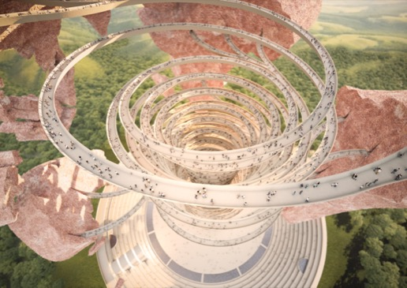
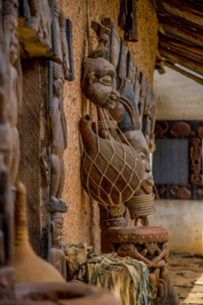

The Baobab
At the center of the museum's spatial concept lies a generative baobab structure. The museum grows digitally like a living structure — instead of fixed galleries, the space unfolds organically, branching into new perspectives as visitors explore.
A symbol of resilience
Cultural objects are the roots of communities
The UNESCO Virtual Museum's architecture is inspired by the baobab tree — a symbol of resilience and central for the life of many African communities. The tree's roots serve as a metaphor for the foundations of our identity, encompassing both tangible and intangible aspects of cultural heritage.
Culture, much like the interdependent roots of a tree, requires nurturing. Cultural artifacts represent the roots of a community, and their theft undermines the foundation of cultural identity.
The architecture also draws on the Guggenheim Museum in New York — a UNESCO World Heritage Site — creating a helical promenade of continuous movement and discovery.

